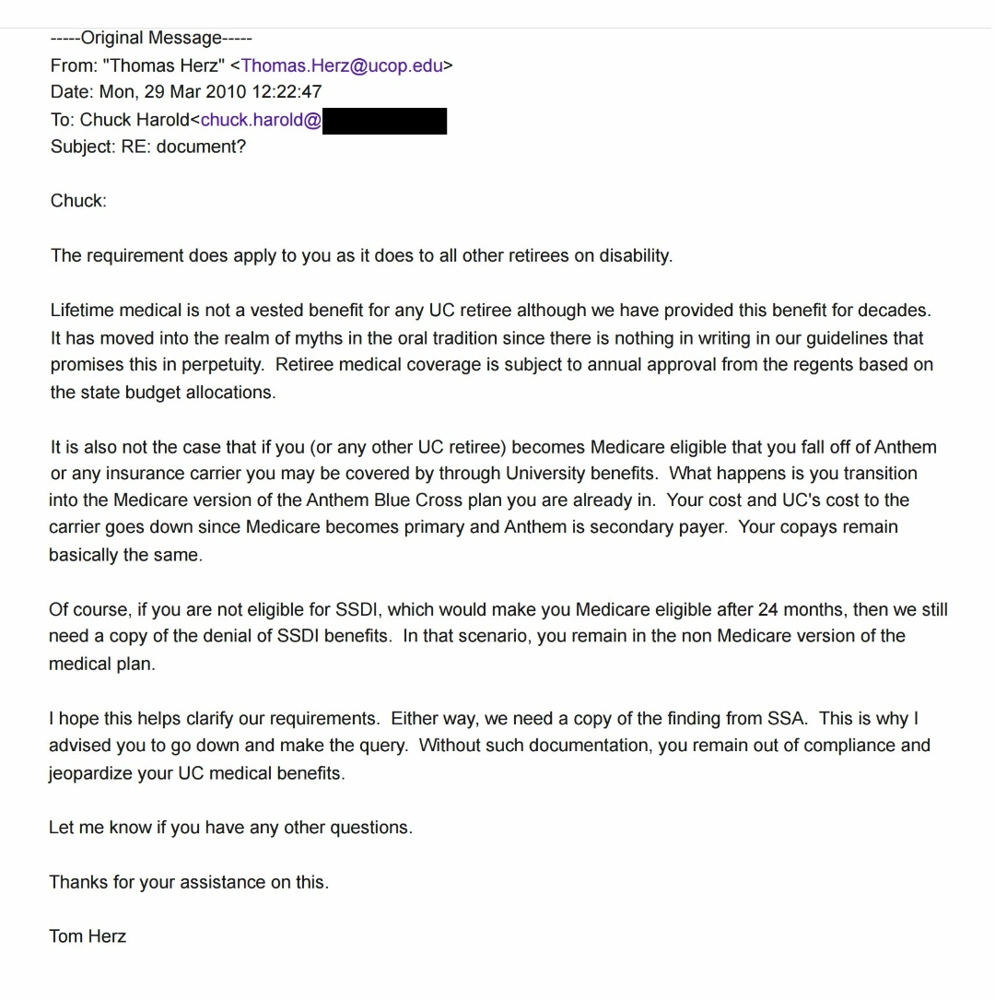

Table of Contents
Prologue — April 20, 2026: The One-Hour Policy
On Friday, April 17, 2026, Charles A. Harold Jr. called Juston Lisk, a State Farm agent whose office in Gold Canyon, Arizona is ten minutes from Harold’s home in Apache Junction. The call took four minutes. Lisk confirmed what Ann Jones of Chapter had told Harold the day before: Harold was not in medical underwriting, his Medicare Open Enrollment Period ran until April 30, and any licensed carrier could write him a Medigap supplemental policy on a guaranteed-issue basis. Lisk told Harold to come in Monday.
On Monday, April 20, 2026, Harold and his wife sat down in Lisk’s office at 9:00 a.m. They walked out in under an hour. Both held signed Medigap supplemental insurance policies underwritten by State Farm, effective May 1, 2026 — the day after the University of California’s stated cancellation date of April 30, 2026. Harold’s premium is $203.23 per month. His wife’s premium is $184.11 per month. The combined out-of-pocket cost is $387.34 per month.
Four days earlier, on April 16, 2026, a licensed Blue Cross Blue Shield of Arizona agent named Sandra Lopez told Harold — four separate times, on a recorded line — that no such policy could be written. Lopez told Harold he would have to be medically underwritten. She told him his guaranteed acceptance was over: “Sir, you’re not in your guaranteed acceptance any longer.” She told him Arizona has “different rules and regulations than California.” She denied him coverage 90 seconds into a 6-minute-44-second call, before Harold had given her his name, date of birth, or Member ID. Each of her assertions was false. Federal guaranteed issue is federal. It does not vary by state. The dates Lopez disputed are a matter of public record tied to Harold’s date of birth.
For ten months — from summer 2025 through the week this prologue was written — the University of California told Harold that his only option was to enroll in Via Benefits. UC’s Retirement Administration Service Center did not tell him he could buy his own Medigap policy on the open market. Via Benefits did not tell him. The Williams-Cook Administrative Review Determination dated February 27, 2026 did not tell him. The grievance review he filed in response will not be resolved for 90 days — 30 to 60 days after his Open Enrollment Period has closed.
Harold found out he could buy his own policy from Ann Jones, a broker at an unaffiliated company, on a recorded call lasting 32 minutes. He then drove ten minutes to a State Farm agent and did it.
The pages that follow document how UC — the second-largest employer in the State of California — spent ten months telling a 65-year-old retiree in active treatment for cancer and cardiac conditions that an option available to every Medicare-eligible American under federal law did not exist for him. They document why. They document who benefits when a retiree is funneled into Via Benefits and who does not benefit when the retiree buys his own coverage. And they document the federal prosecution — United States ex rel. Shea v. eHealth, Inc. — in which the Department of Justice has alleged that the insurance company at the center of Harold’s case operated exactly the kind of funnel his ten-month experience describes.
The State Farm policy proves the funnel is not inevitable. It proves the barriers Lopez erected and UC sustained were not legal requirements. Harold went around them in under an hour, for less money, with a carrier that has nothing to do with any of the named defendants. The rest of this Epilogue answers the question every federal prosecutor is already asking: if a retiree ten minutes from a State Farm office can solve this problem before lunch, why did it take ten months, one federal agency complaint, one state regulatory complaint, and a radical prostatectomy for a 65-year-old retiree to discover — from a broker he called himself — the option UC has still never disclosed?
See Section III for the funnel. See Section VI for the Chapter call that named the exit. This is how Harold took it.
I. Everyone Has an Insurance Story
Everyone has one. The claim that was denied for no reason. The phone call where the representative said one thing and did the opposite. The letter that arrived three days after a deadline nobody told you existed. The hold music. The transfer. The supervisor who was always “in a meeting.”
Health insurance in America operates on a simple principle: make the process so exhausting that a certain percentage of people give up. It is not a bug. It is the business model. The healthy ones never notice because they never need to fight. The sick ones — the ones who actually need coverage — are the ones who discover how the machine really works.
Charles A. Harold Jr. discovered how the machine works. He has been discovering it for over a decade. What makes his case different from the millions of Americans who have the same experience every year is not the frustration — it is the paper trail. Harold documented everything. And then the federal government, in a separate case involving the same insurance company, corroborated what he had been documenting for years.
This chapter is about what happens when your insurance company is not just incompetent — it is a named defendant in a federal prosecution alleging the exact conduct pattern you experienced. And the institution that was supposed to be on your side — the University of California — is suing its own pension contractor for building the system that lost your records while simultaneously telling you the records are fine.
Some coincidences are too precise to be coincidental.
II. The Federal Case — Shea v. eHealth
On November 2, 2021, Andrew Shea — a former eHealth employee — filed a qui tam complaint under the False Claims Act in the United States District Court for the District of Massachusetts. The case: United States ex rel. Shea v. eHealth, Inc., et al., No. 1:21-cv-11777-DJC. On May 1, 2025, the Department of Justice intervened, filing an 850-paragraph complaint alleging a massive kickback scheme in which three major health insurers — Humana, Aetna (now CVS Health), and Anthem (now Elevance Health) — paid more than $230 million in illegal kickbacks to three broker organizations — eHealth, GoHealth, and SelectQuote — in exchange for steering Medicare Advantage enrollees to their plans, regardless of whether those plans were best for the beneficiaries.
On March 25, 2026, Chief Judge Denise J. Casper denied the defendants’ motion to dismiss on all seven substantive counts. The case proceeds to discovery.
To understand why this matters to a retired UCLA police officer living in Apache Junction, Arizona, you need to understand two things: who the defendants are, and what they did.
Elevance Health, Inc. — formerly Anthem, Inc. — is the parent company of Anthem Blue Cross (Harold’s insurer for over two decades) and Blue Cross Blue Shield of Arizona (the subsidiary whose agent denied Harold coverage on April 16, 2026). Elevance is a named defendant. Anthem alone paid more than $262 million to GoHealth and eHealth between 2017 and 2021.
The mechanism, as outlined in the lawsuit, was straightforward. The kickbacks were funneled through agreements bearing benign names: “Marketing Development Agreements,” “Call Development Program Agreements,” “Sponsorship” agreements. The contracts were deliberately drafted to refer only to “marketing” and “lead generation.” The actual sales commitments and cost-per-sale structures were kept out of written contracts — tracked instead through internal spreadsheets, slides, and verbal agreements. As eHealth’s Mr. Kinkead told relator Shea: “[W]e usually work the agreements where it isn’t explicitly called out on pay per app…. The commitments on production are verbal over the phone and on spreadsheets — but nowhere on contract” (DOJ Complaint, ¶416).
One Anthem VP put it even more bluntly: “absolutely nothing in writing or in verbal conversations internally or externally can refer to this as a bonus, incentive or anything other than marketing reimbursement” (¶585). She simultaneously confirmed Anthem had “no way to track or confirm the calls” it was paying $50 per call for — proving the invoicing was fiction.
Everyone has seen this movie. The insurance company that advertises on television during football games — the one with the friendly spokesperson and the reassuring jingle — is the same company whose internal executives are writing emails about how to hide the paper trail. The only thing unusual about the Shea case is that the Department of Justice decided to do something about it.
III. The “Two Horse Race” — Via Benefits and the Retiree Pipeline
In a separate federal action — United States v. Aon plc, No. 1:21-cv-01633 (D.D.C.) — the DOJ’s civil antitrust case described the retiree health exchange market as a “two horse race” between Willis Towers Watson (which operates Via Benefits) and Aon.
In 2026, the University of California contracted with Willis Towers Watson to transfer its Medicare-eligible retirees — including Harold — from employer-sponsored Anthem Blue Cross Medigap coverage to the Via Benefits platform. Via Benefits is not a neutral marketplace. It is a dominant market actor whose business model depends on the volume of retirees transferred from employer group plans.
Here is where it gets personal.
On February 2, 2026, Via Benefits’ own administrator — Joshua Lewis of Willis Towers Watson — confirmed that Harold is ineligible for Via Benefits due to his disability status. Via Benefits’ own FAQ (Question 9) confirms that DDI (Disability Direct Income) recipients are excluded from the platform.
UC proceeded to cancel Harold’s employer-sponsored Medigap insurance and referred him to Via Benefits as the designated replacement. Multiple Via Benefits representatives contacted Harold by phone; he told each one to stop calling because he required Medigap coverage, not Medicare Advantage. Harold never signed any enrollment paperwork with Via Benefits.
The transfer was initiated by UC RASC employee Robin, who on December 26, 2025, emailed Harold blank UBEN 100 and UBEN 101 forms (Case ID 1831281). Robin told Harold the transfer to Via Benefits was mandatory because he and his wife lived in Arizona. Harold and his wife signed both forms per Robin’s instruction. But Robin used the superseded UBEN 100 form (R10/21) — the current UBEN 100 (R1/26), published by UC Human Resources in January 2026, contains a “Voluntary” checkbox in the cancel/de-enroll section. The old form Robin gave Harold does not. Robin told Harold the transfer was mandatory. The form she gave him did not contradict her — because it was the wrong form. The correct form would have required Harold to check “Voluntary,” which would have forced him to acknowledge the transfer was elective, not mandatory.
On February 13, 2026, Harold and his wife filed corrective UBEN forms. Harold’s comment on the corrective UBEN 100 reads: “UC Rep ROBIN incorrectly stated we were required to enroll in VIA BENEFITS which changed out our UC High Option Plan against our wishes and statute. We are keeping our current UC High Option coverage.”
On February 27, 2026 — two days after Harold’s radical prostatectomy — Beverly Jeanine Williams-Cook, Benefits Analyst III at UC RASC, dated a written “Administrative Review Determination” denying Harold’s request to remain in UC High Option Supplement to Medicare coverage. The letter states his coverage “will be suspended on April 30, 2026, due to non-compliance with UC retiree health policy.” Harold did not receive the letter until March 29, 2026 — 30 days after the date on the letter — per envelope postmark. Williams-Cook had been assigned to Harold’s case on January 30, 2026. She made one phone call to Harold on February 11, 2026, during which Harold informed her of the evidence supporting his position. She said she would call back after his surgery. She never called back. She used the same superseded UBEN 100 form. She never requested Harold’s documents. She never addressed his six prior RASC filings. The phone number on her letter was incomplete — 800-888-826, missing the last digit.
The consequences of the Williams-Cook denial arrived within weeks. On April 1, 2026 — 29 days before the stated April 30 suspension date — Anthem Blue Cross issued a Certificate of Creditable Coverage terminating Harold’s coverage without prior warning. Harold filed a corrective UBEN 100 (R1/26) on April 3, 2026, checking the “Involuntary loss of coverage” box and attaching the Anthem termination certificate. Coverage was reinstated on April 7, 2026 — only after intervention by the Department of Managed Health Care (DMHC Case #1409109) and the Centers for Medicare & Medicaid Services (CMS Case #7100158). UC’s own stated suspension date was April 30. The coverage terminated April 1. Nobody notified Harold in advance.
In Harold’s case, UC had been deducting $727.48 per month from his retirement payments for health insurance premiums — premiums that were supposed to be employer-paid under his disability settlement. Harold does not know UC’s matching contribution or what the institution saves per retiree transferred to Via Benefits, but the financial incentive to transfer runs in only one direction. Everyone in the chain makes money when the retiree moves. Nobody in the chain makes money when the retiree stays put. If that structure sounds familiar, it should — it is the exact same incentive alignment the DOJ identified in Shea.
In ten months of RASC correspondence, Via Benefits phone calls, and formal administrative review, no UC representative informed Harold that he retained the right — under federal Medicare law — to decline the Via Benefits pathway entirely and purchase a Medigap supplemental policy on his own on the open market. The omission was consistent across every channel. RASC employee Robin did not mention it. Williams-Cook did not mention it in her February 27, 2026 Administrative Review Determination. Via Benefits representatives who called Harold repeatedly in the weeks before and after his 65th birthday did not mention it. Multiple UC publications given to Harold did not mention it. The option that ultimately resolved Harold’s coverage problem — two State Farm Medigap policies purchased from a local agent in under an hour, totaling $387.34 per month for Harold and his wife combined — was never presented by any party whose job description included informing Medicare-eligible retirees of their coverage options.
The grievance Harold filed after the Williams-Cook letter compounds the omission. UC RASC’s stated resolution timeline for an administrative grievance is 90 days. Harold’s Medicare Open Enrollment Period closes on April 30, 2026. A 90-day review beginning in late March 2026 cannot, by arithmetic, produce a determination before his OEP has expired. A retiree who relied on UC’s grievance process to protect his coverage would discover — 30 to 60 days after his enrollment window had closed — that the process had protected nothing. Harold did not rely on the grievance process. He bought his own policy. Any retiree who did rely on it would now be locked into medical underwriting for the rest of his life.
The identity question raised by Harold’s Via Benefits contacts bears on the scope of UC’s exposure in any action that incorporates these facts. The Via Benefits representatives who called Harold aggressively — including in the weeks before he turned 65, when he was not yet Medicare-eligible — presented themselves in ways that would lead a reasonable retiree to understand them as University of California personnel. Whether those representatives are UC employees, Willis Towers Watson employees, or third-party contractors compensated through UC’s retiree health contract is a factual question answerable through discovery. What is not a factual question is the operational consequence: the funnel from UC-sponsored coverage to Via Benefits runs through personnel whose affiliation UC has structured in a manner that blurs the line between its own employment and that of its downstream vendor. UCLA’s participation in that structure — as one of the UC campuses whose retirees are subject to the same transfer protocol — places it inside the operational chain the DOJ identified in Shea as the mechanism by which kickback compensation is paid: Marketing Development Agreements, Call Development Program Agreements, and Sponsorship arrangements whose written terms reference “marketing” and “lead generation” while the real compensation structure — sales commitments, cost-per-sale — lives on spreadsheets and phone calls (DOJ Complaint ¶¶416, 585).
The self-purchase Harold executed on April 20, 2026 is the control experiment. With State Farm, Harold and his wife together pay $387.34 per month for Medigap supplemental coverage ($203.23 for Harold, $184.11 for his wife) and received that coverage in under an hour. With UC Anthem, Harold paid $727.48 per month from his retirement check for premiums on coverage for the two of them — premiums that were supposed to be employer-paid under his disability settlement. UC’s funnel cost $340.14 per month more than the open-market option UC never mentioned.
IV. The Evidence Chain — Disability Status Erasure
To understand what happened to Harold’s insurance, you first have to understand what happened to his disability classification — because they are the same story.
A. Disability Established (2001–2003)
On August 8, 2001, Octagon Risk Services, Inc. — a St. Paul member company serving as UC’s contracted workers’ compensation claims administrator — issued the following notice to Harold at his Northridge, California address:
I am handling your workers’ compensation claim on behalf of the UC Los Angeles. This notice is to advise you of the status of permanent disability payments for your workers’ compensation injury of 02/16/1996.
You will receive by separate mail, a check in the amount of $2,409.75. Your weekly compensation rate is $140.00, based on your earnings of $672.00 per week. This payment will be deducted from any award you may receive.
Be aware that if you received Extended Sick Leave, the University may take credit against any permanent disability you may receive.
The report from Dr. Steven Silbart, dated 12/27/1999, states that your injury became permanent and stationary on 07/21/1997. The report also indicates that your injury resulted in permanent disability of 6 ¾%. This rating is equal to $2,835.00, which is paid at the rate of $140.00 per week. We are paying 85% of that amount and withholding the balance for attorney’s fees. Your attorney has a copy of this report.
Additionally, you will receive 10% self-imposed increase totaling $240.98.
We will continue to pay all medical bills for care required as a result of your injury if the doctor has recommended further treatment.
— Grace McAdams, Claim Account Executive
cc: Dennis Hargrove, Mastagni, Holstedt & Chiurazzi, 1912 I Street, Ste 102, Sacramento, CA 95814; Lori Wenderoff, North Hollywood, CA
The Octagon letter establishes Harold’s total permanent disability entitlement at $2,835.00 plus $240.98 (10% self-imposed increase) = $3,075.98. At the time of the letter, UC was paying 85% of that amount pending final settlement, with the balance withheld for attorney’s fees.
In March 2003, a WCAB-approved workers’ compensation settlement (Claim No. 199650445, attorney Dennis Hargrove of Mastagni Holstedt) resolved the claim. Settlement terms included a lump sum payment, paid health insurance for Harold and his family, and a concealed weapons permit. Harold’s CCW permit was first issued on September 6, 2002 — further confirming his status as a disabled peace officer. Following the settlement, full DDI payments of approximately $3,075.98 per month, tax-free, began. The settlement has never been revoked, modified, or superseded by the Workers’ Compensation Appeals Board.
UC’s own 1099-R filings confirm Distribution Code 3 (Disability) for tax years 2009 through the first half of 2015 — contemporaneous proof that UC classified Harold’s income as disability income throughout that period. Harold should have been receiving disability payments from the date of the Octagon determination forward, but the record contains gaps. No backpay was ever received. What the record does confirm: UC paid Harold’s insurance premiums and reported his income as tax-free disability income from at least 2009 through approximately mid-2015, when UC converted the classification without WCAB authority.
B. The 2009 Confirmation — Thomas Herz and the Same Playbook
In September 2009 through June 2010, UC RASC analyst Thomas Herz confirmed in writing that Harold was classified as a “retiree on disability.” In his March 29, 2010 email — the critical communication in the chain — Herz wrote: “The requirement does apply to you as it does to all other retirees on disability.” Herz also stated that if Harold became Medicare-eligible, “you transition into the Medicare version of the Anthem Blue Cross plan you are already in. Your cost and UC’s cost to the carrier goes down since Medicare becomes primary and Anthem is secondary payer.” Harold was on the regular UC Anthem Blue Cross plan — the same plan UC would later attempt to cancel in 2026.
From: Thomas Herz, UC RASC — March 28, 2010 (Harold to Herz):
“My retirement settlement stated I have lifetime medical through UC not Medicare or Social Security. Even if I was eligible I do not think it applies to my retirement agreement. Can you check on this please.”
Harold asked Herz twice, in writing, to verify the workers’ compensation settlement before taking any action. Herz did not check. He responded that he was “not aware of any settlements” and “doubted” legal counsel would have established such a precedent — but he never consulted UC’s legal department as Harold requested. Instead, Herz pushed Harold to apply for Social Security Disability Insurance — a process that turned out to be pointless because Harold’s disability income exceeded the Substantial Gainful Activity threshold, making him ineligible. When Harold resisted, Herz escalated to threats:
Thomas Herz (threat, 2010):
“Failure to provide this determination … can result in an offset fee being imposed on your check and termination of UC medical coverage.”
As documented in Chapter 3 (Finding 4A), UC’s own 1099-R for tax year 2009 — filed while Herz was actively corresponding with Harold — reported a gross distribution of $30,059.57 with only $2,200.24 taxable, Distribution Code 3 (Disability). This is contemporaneous proof that UC’s own tax reporting classified Harold as disabled at the exact moment Herz was pushing Harold toward SSDI.
This is the Two-Door Problem established in Chapter 3: either Herz knew Harold’s disability income exceeded SGA thresholds (in which case the SSDI application Herz encouraged was a fool’s errand), or UC’s records were already so broken that Herz did not have access to the data sitting in UC’s own 1099-R filings. Both doors lead to the same conclusion — the system was already failing Harold years before 2015.
And here is why that matters to this chapter: 2009, 2015, and 2025 are the same play run three times. In 2009, Herz pushed a disabled retiree toward a federal program (SSDI) without verifying the settlement that made the push pointless. In 2015, UC converted Harold’s disability classification to service retirement without obtaining a WCAB modification order. In 2025, Robin told Harold the transfer to Via Benefits was mandatory — a transfer Via Benefits’ own administrator confirmed Harold was ineligible for. Three acts. Same playbook. Same institution. Same outcome — always the one least favorable to Harold.

Thomas Herz to Charles A. Harold — March 29, 2010, 12:22 PM PDT — Subject: RE: document? (Source: Chapter 3, Email 9)
This single email — dated March 29, 2010, 12:22 PM PDT — contains five statements that directly parallel the conduct patterns alleged in the DOJ’s Shea complaint. Every element of the scheme the federal government is now prosecuting appears in one UC employee’s email, written sixteen years before the prosecution began:
| Herz Statement | Shea Conduct Pattern |
|---|---|
| “All other retirees on disability” — confirms Harold’s disability classification | Discrimination against disabled beneficiaries. The DOJ alleges disabled beneficiaries were systematically filtered out because they were considered less profitable. Herz confirmed Harold was in that exact category. |
| “Your cost and UC’s cost to the carrier goes down” — the financial motive admission | Concealing financial incentives. The DOJ alleges kickbacks were disguised as marketing. Herz put the cost-savings motive in writing — UC and Anthem both save money when the retiree moves to Medicare-primary. |
| “Moved into the realm of myths in the oral tradition” — dismisses a written WCAB settlement as folklore | Steering beneficiaries away from best-fit plans. The DOJ alleges brokers steered enrollees regardless of what was best for them. Herz dismissed the legal agreement governing Harold’s rights and steered him toward SSDI — without reading the settlement Harold asked him to check. |
| “You remain out of compliance and jeopardize your UC medical benefits” — the compliance threat | Misrepresenting guaranteed issue rights. The DOJ alleges agents made material misrepresentations about enrollment rights. Herz misrepresented the consequences of non-compliance to coerce Harold into an action not required under his settlement. |
| Threat never enforced. Harold did not comply. No offset fee was imposed. No coverage was terminated. Herz disappeared after June 8, 2010. Coverage continued uninterrupted for five more years. | Deliberate delay as a weapon / False certifications. The DOJ alleges brokers used pressure tactics to prevent beneficiaries from staying in preferred plans. Herz used a deadline threat to create urgency, then disappeared when Harold did not comply — proving the “requirement” was manufactured coercion, not administrative policy. |
Five statements. Five federal case parallels. One email. One date: March 29, 2010, 12:22 PM.
C. The 2015 Reclassification — Disability Erased Without Legal Authority
Sometime after 2014, Harold began receiving letters from a third-party workers’ compensation adjusting company representing UC (believed to be Gates or Gallagher). A representative stated Harold was required to appear for a medical examination for “fitness for duty” to determine if he still qualified for “Disability Income.” Harold explained that his settlement had no such requirement. The representative stated she knew nothing about a lawsuit or workers’ compensation settlement agreement and stated Harold was required to appear or UC would stop his monthly disability payments.
In early 2015, Harold contacted UC “At Your Service.” At Your Service had no records reflecting his workers’ compensation case or settlement agreement. At Your Service explained that his 21 years of service credit had been reached by combining active-duty time with disability time, making him eligible for “Service Retirement Income.” When Harold specifically asked about his medical insurance, he was told UC would continue to pay for his insurance because they had been paying for it under disability income previously.
On March 2, 2015, RASC sent Harold a letter stating: “Unlike UCRP Disability Income, Retirement Income is a lifetime benefit.”
That statement is materially misleading. In Jacobs et al. v. The Regents of the University of California (2017) 2d Dist., Case No. B268758 — the very case UC later cited to deny Harold’s CCW renewal — the court held that Disabled Members receiving DDI “can elect to retire when eligible, but are never required to do so.” UC’s own lead disability benefits analyst stated under oath in that proceeding that a person may convert to Retirement “only by making an affirmative election to do so.” DDI does not expire. It does not terminate at a service milestone. It continues until the member chooses otherwise. RASC’s letter told Harold the opposite — that Retirement Income was the lifetime benefit and Disability Income was not — to induce a conversion that would cost Harold $727.48 per month in premiums and convert his tax-free income to fully taxable income. The letter did not disclose the premium deductions. On April 2, 2015, Harold generated a Retirement Estimator — a three-page document showing Basic Retirement Income of $2,341.04/month with $0.00 covered compensation and no insurance premium deduction disclosed anywhere in the document. At Your Service counselor Angelica Simental verbally told Harold UC would continue to pay his insurance since he had previous disability income.
No WCAB modification order was ever obtained. Under California Labor Code §§ 5803–5804, only the Workers’ Compensation Appeals Board has jurisdiction to determine whether disability has “diminished or terminated” — and that jurisdiction expires five years after the date of injury (January 1996; cutoff January 2001). The conversion occurred in June 2015 — fourteen years after the Octagon determination and nineteen years after the date of injury.
Harold’s IRS Form 1099-R beginning in tax year 2016 forward reflected fully taxable retirement income (Distribution Code 7). UC began deducting health insurance premiums from his monthly payments — contrary to what At Your Service had represented. These premium deductions from approximately 2015 through the present total approximately $133,000 to $150,000.
Anyone who has ever had their insurance company change the terms of a policy and then point to fine print that nobody disclosed — that is this story, except the fine print does not exist. There was no amended settlement. There was no WCAB order. There was just a change. And in Harold’s case, the institution’s own court filings say the conversion was supposed to be voluntary.
D. The Timing
Harold’s 2015 reclassification removed him from the disabled beneficiary category one year before the DOJ’s documented kickback scheme began (2016–2021). After conversion, Harold was classified as a regular retiree — no longer a disabled beneficiary — the exact category the Shea complaint identifies as being systematically excluded because disabled beneficiaries were considered less profitable. Under the Shea framework, Harold went from “unprofitable disabled beneficiary” to “profitable regular retiree” in 2015, just in time for the scheme to begin in 2016.
Harold is not alleging that the timing was coordinated. Harold is presenting the documented timeline and noting that the reclassification and the kickback scheme share a one-year gap.
V. The Lopez Call — April 16, 2026
This is the part of the story where the federal prosecution and Harold’s personal experience converge in a single recorded phone call.
On April 16, 2026, Harold — a 65-year-old Medicare beneficiary within his six-month federal Medigap Open Enrollment Period, recovering from cancer surgery performed February 25, 2026 — called Blue Cross Blue Shield of Arizona to obtain guaranteed issue Medigap coverage. BCBS Arizona is a subsidiary of Elevance Health, Inc. — a named defendant in Shea v. eHealth, the very case alleging that Elevance agents systematically denied Medicare beneficiaries their enrollment rights. The motion to dismiss had been denied just 22 days earlier.
The call was dual-recorded. What follows is not paraphrased. It is not interpretation. It is what happened.
At timestamp 0:01:35 — ninety seconds into the call — BCBS Arizona agent Sandra Lopez told Harold: “He would have to be medically underwritten. We would ask you a series of medical questions.”
Harold had not yet provided his name. His date of birth. His Member ID. Any identifying information. Lopez had not accessed any system. She had not viewed his claims history. Her denial was not based on anything specific to Harold. It was her default response.
Harold (0:01:45): “Hold on, hold on. I’m not medically underwritten. Medigap enrollment is guaranteed in enrollment period.”
Lopez: “It is not.”
Harold: “It is. I’m looking at the federal law right now. It is. I can purchase it up to 50 days from now. To federal law.”
Lopez (acknowledging the rule): “So if you have a letter saying that you’re gonna be terminated, yes, you have a guaranteed acceptance.”
Harold: “Yeah. I have a letter…”
Lopez (denying him anyway): “Sir, you’re not in your guaranteed acceptance any longer.”
She then falsely asserted: “Arizona has different rules and regulations than California.” Federal guaranteed issue is federal. It does not vary by state.
Lopez never asked to see the termination letter. Never processed an application. Never provided a quote. Never transferred Harold to enrollment. The supervisor was “in a meeting.” No callback was ever received. The call lasted 6 minutes and 44 seconds.
Lopez denied Harold guaranteed issue enrollment four separate times (0:01:35, 0:01:48, 0:03:38, 0:03:59). Harold corrected her every time. She persisted every time. She acknowledged the rule and then denied its application. This is not confusion. This is a scripted denial.
Every American who has ever been told “that’s not our policy” when they know it is the law — that is this call. The difference is that Harold was recording. And the company on the other end of the line was already being sued by the federal government for the same thing.
VI. The Contrast — Ann Jones / Chapter (April 17, 2026)
The day after the Lopez call, Harold called Chapter (askchapter.org), a licensed independent insurance brokerage, and spoke with agent Ann Jones. The contrast between the two calls — separated by fewer than 24 hours — is devastating.
Jones provided Harold a complete, accurate, and legally compliant Medicare supplement consultation. She collected his information. She read the Medicare disclaimer. She conducted a needs assessment. She verified his enrollment eligibility. She presented options. She provided quotes for three Arizona-based Medigap plans — without medical underwriting. She confirmed Harold’s enrollment deadline to the exact day: “April 30th is when your open enrollment is going to end.” She told Harold: “Pre-existing conditions do not matter.”
Jones did in 32 minutes what Lopez refused to do in 6.
Near the end of the call, Harold described the Lopez experience. Jones’s reaction:
Harold: “I called somebody last night and they’re like, you’re in the underwriting period. No, I’m not in the underwriting period. Do the math. Pick your shoes off. Count your toes.”
Jones: “Unbelievable. Like you’re telling them how it works.”
A licensed, independent insurance broker — with no stake in the outcome — immediately recognized Lopez’s conduct as wrong. She did not hedge, equivocate, or suggest Harold might have misunderstood. She said “unbelievable” because what Lopez did was, to any competent insurance professional, indefensible.
The Lopez/Jones contrast eliminates every defense Elevance Health could offer:
- “It was a training issue” — Jones, operating from a different company with the same federal rules, knew the law perfectly
- “It was a misunderstanding” — Lopez denied guaranteed issue four separate times. Harold corrected her each time. She persisted
- “Arizona has different rules” — Jones is licensed in Arizona. She quoted three Arizona-based plans without medical underwriting
- “Harold was outside the enrollment window” — Jones confirmed Harold’s OEP to the exact day. He was 74 days into a 180-day window
- “The caller was confused” — Harold told Lopez the correct law. He told Jones the correct law. Both calls are recorded
The only variable that changed between the two calls was the company. The caller was the same. The facts were the same. The law was the same. The outcome was opposite.
Exhibit: 19-Point Medicare Compliance Comparison — Lopez vs. Jones
Green = compliant. Red = non-compliant or not performed.
| # | Required Disclosure / Action | Ann Jones — Chapter (Apr 17) | Sandra Lopez — BCBS AZ (Apr 16) | Legal Authority |
|---|---|---|---|---|
| 1 | Call Recording Disclosure | “This call may be recorded…” (line 6) | Read recording disclosure (ONLY compliant action) | CMS MCMG Ch. 3 §50.1 |
| 2 | Third-Party Marketing Disclaimer | Disclosed 24 organizations, 78 products, directed to medicare.gov (line 48) | NOT DISCLOSED | 42 CFR §422.2274(g) |
| 3 | Privacy Consent / Medicare System Access | Requested permission, offered to verify Medicare ID (line 112) | NOT OBTAINED | HIPAA 45 CFR §164.508 |
| 4 | Guaranteed Issue Rights | “Pre-existing conditions do not matter” (line 158) | Stated rule, then denied it: “Sir, you’re not in your guaranteed acceptance any longer” | 42 U.S.C. §1395ss(s) |
| 5 | Part A Deductible Disclosure | “I’m just required to let you know there is a deductible with Part A” (line 172) | NOT DISCLOSED | NAIC Model Reg #651 §17 |
| 6 | Part B Deductible / Cost-Sharing | Explained $283 deductible, 80/20 split, supplement covers 20% (line 176) | NOT DISCLOSED | NAIC Model Reg #651 §17 |
| 7 | Part B Premium and IRMAA | “$202.90 is the standard amount… based on your income from two years ago” (line 180) | NOT DISCLOSED | 42 CFR §408.20 |
| 8 | Part D Enrollment / Late Penalty | “If you don’t have a Part D plan, you will get a penalty” (line 192) | NOT DISCLOSED | 42 U.S.C. §1395w-113(b) |
| 9 | Dental/Vision Exclusion | “Medicare does not cover dental and vision” (line 200) | NOT DISCLOSED | NAIC Model Reg #651 §17 |
| 10 | Medigap Standardization | “Plan G is a Plan G. Every single Plan G is exactly the same” (line 220) | NOT DISCLOSED | 42 U.S.C. §1395ss(p) |
| 11 | No Network Restriction | “There’s no network… they have to accept your supplement” (line 212) | NOT DISCLOSED | 42 U.S.C. §1395ss(p)(4) |
| 12 | Competitive Quotes | Cigna $138.75/mo, State Farm $203.24/mo, Mutual of Omaha $246.08/mo (lines 246, 266, 282) | ZERO QUOTES PROVIDED | NAIC Model Reg #651 §9 |
| 13 | Rate Increase Honesty | “They’re all going to increase… None of them are going to go down” (line 226) | NOT DISCLOSED | NAIC Model Rule #660 |
| 14 | Medical Underwriting Context | Correctly limited to future plan changes (line 258) | MISAPPLIED to current enrollment: “you have to go through medical underwriting” | 42 U.S.C. §1395ss(s)(2) |
| 15 | Enrollment Deadline | “April 30th is when your open enrollment is going to end” (line 298) | NO DEADLINE IDENTIFIED | 42 U.S.C. §1395ss(s) |
| 16 | Request for Termination Letter | “And you have a letter stating that? …Okay” (line 84) | NEVER ASKED TO SEE THE LETTER | 42 U.S.C. §1395ss(s)(3) |
| 17 | Application / Enrollment Offer | Sent emails with three plans, pricing, and contact info (line 344) | NEVER OFFERED | 42 U.S.C. §1395ss(d) |
| 18 | Needs Assessment | Full: health status, doctor visits, prescriptions, dental/vision, spouse (line 158) | NONE CONDUCTED | CMS MCMG Ch. 3 |
| 19 | Escalation / Supervisor | No escalation needed — competent service | DENIED. Promised callback never received | A.R.S. §20-461 |
SCORECARD
Ann Jones performed 19 of 19 required disclosures.
Sandra Lopez performed 1 of 19.
VII. The Sagitec Lawsuit — The System That Lost Harold’s Records
The insurance story and the records story are not two stories. They are one story — and the University of California proved it by suing its own contractor.
In December 2025, the Regents of the University of California filed suit against Sagitec Solutions and Linea Solutions under the California False Claims Act, seeking triple damages. UC alleged that the $28 million UCRAYS system upgrade produced more than 1,000 errors — 170 of them critical — including canceled benefits, incorrect calculations, and pension payment failures affecting 151,000 retirees.
UCRAYS is not an abstract system. It is the system of record that generates Harold’s 1099-R tax forms — the forms that showed three conflicting distribution codes in a single tax year. It controls his disability classification — the classification UC changed in 2015 without a WCAB proceeding. It manages his benefit elections and pension calculations. It is the system Ida Fong could not locate his records in.
As documented extensively in Chapter 10, UC cannot simultaneously argue that UCRAYS was so error-ridden that its contractor committed fraud — and also argue that the data UCRAYS produced about Harold is accurate. These two positions are mutually exclusive. If UCRAYS produced 1,000+ errors affecting 151,000 retirees, UC must demonstrate that Harold’s records were not among those affected — and it cannot, because Ida Fong already confirmed she could not locate them.
Sagitec, in its counterclaim, alleges that UC “embarked on a vindictive crusade” because it “got egg on its face.” Sagitec contends that UC’s own “late-stage design changes” caused many of the problems. UC then hired former Sagitec employees — the same individuals UC alleges committed fraud — to build an in-house replacement. As Sagitec’s lawyers observed: “These are the very people that UC alleges engaged in the supposed fraud for which UC seeks tens of millions of dollars.” UC has continued using Sagitec’s software for six years, distributing more than $28 billion in benefits through the very system UC now calls fraudulent.
If your bank sued its own IT contractor for building a system that corrupted account balances — and then kept using the system for six years while the lawsuit was pending — you would not trust your account balance. That is Harold’s position, except the stakes are not a bank balance. They are a disability pension, tax classifications filed with the IRS, and health insurance for a cancer survivor and his wife.
VIII. Three Independent Sources — One Conclusion
Three independent sources — none of whom were coordinating, none of whom were aware of Harold’s case as a pattern — described the same institutional failure affecting the same systems during overlapping time periods.
Source 1 — Ida Fong (2021, Benefits Processing Floor)
On February 24, 2021, UC Benefits employee Ida Fong called Harold regarding his son’s health insurance. UC’s system had the son coded as “disabled.” The son has never been disabled. Harold is the family member with the documented permanent disability determination. On March 18, 2021, Fong called again. She processed a premium refund for the son’s overpaid premiums. When Harold asked her to correct his own disability records, Fong stated: “Records were lost during computer system upgrades.” She could not locate Harold’s disability status, workers’ compensation history, or benefit classifications.
Fong’s actions reveal a structural asymmetry in UC’s error-correction process. Error benefiting UC (removing the son’s erroneous disability coding): Fong acted within weeks — initiated the call, confirmed the error, processed the correction, issued a refund. Error harming Harold (restoring his disability classification): Despite Harold informing Fong in the same conversation that he was the disabled individual whose classification had been erroneously changed, Fong took no corrective action. She cited lost records as the reason she could not help — the same lost records she had just worked around to correct the son’s status.
Harold emailed Fong on March 12, 2021, memorializing the conversation and requesting correction. Fong never replied.
UC Regulation 11.08 (Correction of Errors) states: “If the University determines that the amount of an annuity, benefit or refund has been reported or paid in error, the Plan Administrator will adjust the payment.” UC’s interpretation of this regulation operates in only one direction: when the error benefits the member, UC corrects swiftly; when the error benefits the institution, UC cites lost records, claims inability to investigate, and falls silent.
Source 2 — UCLA CFO Stephen Agostini (February 2026, Executive Suite)
On February 13, 2026, UCLA Vice Chancellor and Chief Financial Officer Stephen Agostini — a man who had served as CFO of the United States Consumer Financial Protection Bureau and testified before Congress — told the Daily Bruin that UCLA’s annual financial reports posted on its website since 2002 are “erroneous and unaudited,” that the university carries a $425 million annual structural deficit caused by “financial management flaws and failures,” and that the Ascend Finance Transformation Project consumed $213 million over seven years, including $150 million with “nothing to show for it.”
Chancellor Julio Frenk fired Agostini four days later. The Daily Bruin editorial board responded: “Agostini’s departure after interview with The Bruin shows UCLA punishes transparency.”
UCLA called his claims “inaccurate.” Then the record caught up. The Academic Senate confirmed the deficit approaches $400 million annually. UCLA’s interim CFO admitted a $220 million deficit on central accounts alone. And on March 31, 2026, the City of Culver City announced it had hired Agostini as its new CFO — lauding him for having “closed a $300 million budget gap” at UCLA.
Culver City. The same Culver City Police Department where Harold began his law enforcement career in 1985, before joining UCLA PD in 1989.
Source 3 — The Regents of the University of California (December 2025, Their Own Pleading)
In their own California False Claims Act complaint, the Regents admitted that UCRAYS produced more than 1,000 errors, 170 of them critical, including canceled benefits and incorrect calculations. This is the same system Harold has been asking about for years. The same system his attorney requested an audit of in 2021. The same system Ida Fong said lost his records.
The institution that ignored Harold’s audit request for four and a half years, fired its CFO for saying the records were wrong, and never responded to his attorney — then filed a lawsuit confirming everything Harold had been documenting all along.
Two independent sources — one on the benefits processing floor, one in the executive suite — described the same institutional failure affecting the same systems during overlapping time periods. A third source — UC’s own pleading — confirmed it under oath in a court filing. UCLA fired the one who said it out loud. Culver City hired him. And the University of California, Los Angeles — Harold’s own former employer — corroborated Harold’s case with its own records.
Some circles close themselves.
IX. The CMS Black Hole — Nobody Will Investigate Their Own Database
Harold filed a formal complaint with the Centers for Medicare & Medicaid Services (CMS Case #7100158). CMS’s response — and its refusal to investigate its own database — reveals a regulatory structure designed to ensure that nobody is responsible for anything.
CMS advised Harold in writing that it lacked jurisdiction over his Medigap complaint — deferring to state insurance regulators. Harold’s April 9, 2026 letter to CMS Health Insurance Specialist Tamika Lyons did not ask CMS to regulate Anthem’s rates or adjudicate a claims dispute. Harold asked CMS to look at its own Coordination of Benefits database — a federal system that no state insurance department operates, accesses, or has authority over.
The anomalies Harold documented in CMS’s own database for his Medicare ID:
- A Pre-65 Ghost Entry: On December 24, 2025, a Medicare representative told Harold on a recorded line that an enrollment/cancellation entry existed in the CMS system predating his 65th birthday (January 3, 2026). A Medicare Supplement enrollment entry before Medicare eligibility is a factual impossibility. When Harold called back on December 31, 2025, Medicare representative Monica Soria searched for the entry and stated: “I don’t know where she looked at that because I’m not able to find it.” A record visible to one representative had become invisible to another within days.
- Missing Crossover Record: CMS representative Eric Thompson confirmed on December 31, 2025 on Medicare’s recorded line that Medicare had no crossover record linking Harold’s UC High Option Supplement to Medicare coverage to his Medicare account.
- $100,000 Retroactive Claim Denials from a COB Error: On December 31, 2025, Harold discovered approximately $100,000 in claims retroactively denied due to a phantom “secondary insurance” flag in Anthem’s system — secondary insurance Harold never had in thirty-plus years. An Anthem representative confirmed: “the coordination of benefits was not updated.”
- Retroactive Member ID Substitution: On April 2, 2026, Anthem’s portal had retroactively applied the post-Medicare ID to certificates for the 2024 and 2025 pre-Medicare plan years — years when that ID did not exist.
The jurisdictional ping-pong:
- CMS: “We have no jurisdiction” — referred Harold to state regulators
- California Department of Insurance: “This is a federal matter” — referred Harold back to CMS
- DMHC (Case #1409109): Opened a case and is coordinating with Elevance Health investigators, but cannot access the CMS COB database
The federal agency says it is a state matter. The state agency says it is a federal matter. Nobody is investigating four documented anomalies in a federal database that only CMS can query.
Everyone who has ever been bounced between departments — “that’s not our department, let me transfer you” — knows this experience. Except Harold is not being bounced between departments at a cable company. He is being bounced between federal and state regulatory agencies while records appear and disappear in a government database.
X. The Conduct Pattern Table — Shea Meets Harold
The following table maps the conduct alleged in the DOJ’s Shea complaint to documented events in Harold’s case. Every entry in the “Harold” column is sourced from published chapters, recorded calls, or UC’s own administrative records. Every person named in Harold’s column took a documented action — or failed to take one.
| Conduct Pattern | Shea v. eHealth (DOJ Complaint) | Harold’s Documented Experience |
|---|---|---|
| Steering beneficiaries away from best-fit plans | Brokers steered Medicare enrollees to plans paying highest kickbacks, not plans best suited to beneficiaries | UC RASC employee Robin told Harold the transfer to Via Benefits was mandatory. It was not. Via Benefits’ own administrator (Joshua Lewis) had already confirmed Harold was ineligible for the platform. Williams-Cook then denied Harold’s request to remain in UC High Option — two days after his cancer surgery. |
| Misrepresenting guaranteed issue rights | Agents made material misrepresentations about enrollment rights to Medicare-eligible consumers | BCBS AZ agent Sandra Lopez told Harold he would be medically underwritten — four denials in 6 minutes, before she knew his name. She stated the correct rule, confirmed Harold met it, and denied it anyway. |
| Pushing disabled beneficiaries toward federal programs | Brokers diverted disabled callers away from preferred carrier agents; Humana VP threatened to cut “marketing dollars” for brokers enrolling too many disabled beneficiaries | In 2009, UC RASC analyst Thomas Herz pushed Harold toward SSDI without verifying the settlement — a process that was pointless because Harold’s income exceeded SGA thresholds. When Harold resisted, Herz threatened termination of coverage. Same playbook UC would run again in 2015 (forced conversion) and 2025 (Via Benefits). Three acts, same play. |
| Concealing financial incentives | Kickbacks disguised as “marketing”; sales commitments kept out of written contracts; discussions moved to phone calls to avoid documentation | Harold’s premium deduction was $727.48/month — money UC was supposed to be paying under his settlement. UC’s matching contribution and the institutional savings per retiree transferred to Via Benefits are undisclosed. The incentive structure is opaque by design. |
| Discrimination against disabled beneficiaries | Disabled (U65) beneficiaries systematically filtered out; Humana and Aetna conditioned funding on reducing disabled enrollment percentage | Harold’s WCAB-established disability was erased without legal authority in 2015, converting him from “unprofitable disabled beneficiary” to “profitable regular retiree” one year before the kickback scheme began. RASC’s own letter misrepresented DDI as non-lifetime to induce the conversion. |
| Using the wrong form / suppressing disclosure | Brokers deliberately structured agreements to avoid documenting the actual arrangement; Anthem VP directed “absolutely nothing in writing” | Robin gave Harold the superseded UBEN 100 (R10/21) — the form that does NOT contain the “Voluntary” checkbox. The current form (R1/26) does. If Harold had been given the correct form, he would have had to acknowledge the transfer was elective. He was not given that form. |
| False certifications to regulators | Insurers falsely certified AKS compliance and anti-discrimination compliance to CMS while actively violating both | UC certifies compliance with fiduciary obligations to retirees while applying UC Regulation 11.08 (Correction of Errors) in only one direction — correcting errors that benefit members, ignoring errors that benefit the institution. |
| Deliberate delay as a weapon | Brokers used call routing, agent coaching, and carrier shutoffs to prevent beneficiaries from enrolling in competitor plans | Williams-Cook’s denial was dated February 27 but not received until March 29 (30-day gap, per envelope postmark). UC structured a 90-day CMP373 response timeline guaranteeing no resolution before the suspension date. Then on April 1 — 29 days early — Anthem terminated Harold’s coverage without notice, requiring DMHC and CMS intervention to reinstate it on April 7. The coverage termination falls inside the 90-day retaliation presumption window under California law. |
| Records manipulation / spoliation | Internal communications hidden; discussions moved off email; Anthem VP directed “absolutely nothing in writing” | $14,094.36 in previously documented paid claims erased from Anthem portal within hours of the Lopez call. Valley Fever hospitalization (~$230,000 in claims) absent from all portal records — and Harold has been denied access to those bills despite multiple written requests. Member ID retroactively substituted. Lt. Echols reversed himself on Harold’s personnel file within 100 minutes. |
Exhibit: False Claims Act Count Mapping — Shea Counts to Harold’s Evidence
| Shea FCA Count | Predicate | Harold’s Parallel Evidence |
|---|---|---|
| Count I — § 3729(a)(1)(A) | AKS violations — false claims from kickback-tainted enrollments | Harold’s insurer (Elevance/Anthem) paid $262M+ in kickbacks to brokers (2017–2021); Harold’s coverage is administered by the same entity |
| Count II — § 3729(a)(1)(A) | False certifications of AKS compliance | Elevance certified AKS compliance to CMS while paying GoHealth $230M+ and eHealth $32M+ in disguised enrollment kickbacks |
| Count III — § 3729(a)(1)(A) | Discrimination-based false claims | Harold is a documented disabled beneficiary whose disability classification was erased without WCAB authority; Lopez constructively denied him coverage on April 16, 2026 |
| Count IV — § 3729(a)(1)(B) | False records material to AKS claims | Anthem’s Rhonda Clark directed that “absolutely nothing in writing or in verbal conversations internally or externally can refer to this as a bonus, incentive or anything other than marketing reimbursement” (¶585) |
| Count V — § 3729(a)(1)(B) | False records material to discrimination claims | UC’s UCRAYS system simultaneously classified Harold four conflicting ways; Ida Fong admitted records were “lost during computer system upgrades” |
| Count VI — § 3729(a)(1)(C) | Conspiracy to violate AKS | The structural alignment of UC, Via Benefits/WTW, and Elevance/Anthem — each with financial incentives to transfer disabled retirees into the broker pipeline |
| Count VII — § 3729(a)(1)(C) | Conspiracy to discriminate | Lopez (Elevance subsidiary agent) denied Harold guaranteed issue coverage 22 days after Elevance’s MTD was denied in the very case alleging systematic disabled beneficiary exclusion |
Exhibit: The Extrinsic Evidence Advantage — Harold’s Evidence vs. Shea’s Record
Harold’s case offers something the Shea record does not: independent, extrinsic, real-time evidence from a living fact witness who documented it as it happened.
| Evidence Type | Harold’s Extrinsic Evidence | Shea’s Evidence (by comparison) |
|---|---|---|
| Recorded Phone Calls | Sandra Lopez (BCBS AZ, Apr 16, 2026) — dual-recorded. Ann Jones (Chapter, Apr 17, 2026) — dual-recorded, full transcript. Agent Roger (Anthem, Apr 16, 2026) — confirmed active coverage on recorded line. Via Benefits calls (multiple, 2025–2026). Monica Soria (Medicare, Dec 31, 2025) — recorded line. | Internal communications obtained through litigation discovery |
| Video Evidence | Harold video-recorded his Anthem portal within one hour of the Lopez call — documenting ZERO medical records. Three documented stages of records disappearing, each corresponding to a regulatory milestone. | N/A — no portal evidence in the complaint |
| Screenshots | UCRAYS portal screenshots (multiple, dated Jan–Feb 2026) documenting system messages, account status changes, and coverage changes in real time | N/A |
| Contradictory Classifications | Six contradictory UC classifications of one employee: (1) “Resigned” — Karl T. Ross; (2) “Disability Income Recipient” — 1099-R Code 3; (3) “RETIRED” — CCW permits; (4) “Retiree on disability” — Thomas Herz; (5) “Medically separated” / “Active retiree” — Chobanian; (6) “Elected regular retirement” — Williams-Cook | Internal insurer emails and spreadsheets |
| IRS Tax Records | Three conflicting 1099-R forms for tax year 2015 bearing Distribution Codes 3, 2, and 7 simultaneously. 10 years of 1099-R records documenting the disability-to-retirement code switch. | N/A |
| UC Institutional Admissions | (a) Thomas Herz: confirmed “retiree on disability.” (b) Ida Fong: records “lost during computer system upgrades.” (c) Joshua Lewis (Via Benefits): Harold ineligible due to disability. (d) CMP373: confirms Harold has not retired under Gold Book. (e) Agostini (UCLA CFO): reports since 2002 are “erroneous and unaudited.” (f) Lt. Echols: personnel file “located” then reversed in 100 minutes. | Defendants’ internal emails obtained through discovery |
| Active Regulatory Proceedings | CMS Case #7100158; DMHC Case #1409109; Three POST complaints; § 132(a) crime report (57 days, no response); PRR #26-6921; HIPAA records request; Spoliation warning (deadline passed) | Qui tam relator’s FCA filing |
| Data Breach Correlation | 25 documented data breaches (2005–2026). 17 of 25 (68%) correlate to events affecting Harold’s records. Anthem nation-state breach (Feb 2014–Jan 2015) compromised 78.8M records — during exact window disability was reclassified. | Referenced generally in the complaint |
| Whistleblower History | Harold exposed corruption in UCLA PD in the early 1990s — documented in UCLA’s own Luskin Center publication (March 2022, pp. 35–36). Founded FUPOA. Filed civil rights lawsuit SC022125. | Andrew Shea was an eHealth employee (relator) |
| Personnel File Suppression | Demanded through three formal channels (POBR, PRR, Spoliation Warning) — 58 days past statutory deadline. Karl Ross: file was “old and destroyed.” Echols: “located” then reversed in 100 minutes. | Discovery production ordered by court |
| Government Agency Inaction | Saenz audit request to Bustamante: unanswered 4+ years. § 132(a) crime report: 57 days, no case number. Spoliation warning: deadline passed, no response. | DOJ intervention in Shea |
| Medical Urgency | Recovering from radical prostatectomy for Gleason 4+3=7 prostate cancer (surgery Feb 25, 2026). AFib cardiac surgery consultation Apr 9; coverage terminated 2 days post-cancer surgery. Anthem portal records disappeared while Harold needs cardiac surgery staging records. | N/A |
XI. The Schrock Demand Letter and the Silence
On April 16, 2026 — the same day as the Lopez call — Harold sent a formal demand letter via fax to BCBS Arizona Chief Compliance Officer Anne Schrock. The letter documented the Lopez call verbatim, put BCBS AZ on written notice of Shea v. eHealth — informing Schrock that her company’s parent, Elevance Health, is a named defendant — demanded preservation of the Lopez call recording, and demanded immediate guaranteed issue enrollment for both Harold and his wife, effective no later than May 1, 2026.
The letter established that Harold has two independent and overlapping federal guaranteed issue rights:
- Clock 1 — Six-Month Medigap OEP: Under 42 U.S.C. § 1395ss, Harold’s Open Enrollment Period runs from January 1, 2026 through approximately June 30, 2026. During this period, any insurer must sell him any Medigap policy it offers — without medical underwriting, without health questions, and without denial for pre-existing conditions.
- Clock 2 — 63-Day Guaranteed Issue Window: When Harold’s UC coverage terminates on April 30, 2026, a separate 63-day window opens running through July 2, 2026, triggered by involuntary loss of employer group coverage.
Even if BCBS AZ delays past April 30, Harold’s federal guaranteed issue right remains in full effect through July 2, 2026. Lopez’s statement that Harold would require medical underwriting was unlawful under either clock.
The Schrock demand letter also cited Arizona’s own regulatory guidance. Arizona Department of Insurance and Financial Institutions Regulatory Bulletin 2001-13 states: “It is imperative that consumers receive accurate information regarding their rights to Medigap coverage. Misrepresentation in the sale of Medicare Supplement insurance is prohibited by A.R.S. § 20-443 and A.A.C. R20-6-1116.” Lopez’s four recorded denials of guaranteed issue rights — after she herself stated the correct rule — fall squarely within this prohibition.
On April 17, 2026, Harold sent a nine-section formal rejection and escalation demand to Elevance Health’s corporate executive response team (Allison Cumming), putting Elevance corporate on written notice of the Shea case, the Lopez denial, the three-stage records disappearance, and the HIPAA deadline. The letter rejected Elevance’s case closure (Reference INQ-COMM-197295), cited Temple v. Hartford (D. Ariz. 2014) for the principle that the duty of good faith is non-delegable — Anthem cannot escape liability by telling Harold to call UC — and identified a material error in Elevance’s own closure letter: it stated May 1, 2026 as the termination date when the actual date was April 1, 2026. Anthem’s own CX Resolution Risk Analyst did not know the correct date in Anthem’s own system.
Harold offered to pay $2,909.92 in back premiums to maintain his coverage without interruption. Neither UC nor Anthem has responded to that offer.
As of the date of this chapter — BCBS Arizona has not returned the supervisor callback Lopez promised, has not responded to the Schrock demand letter, and has not contacted Harold by any means. Elevance Health corporate has not responded either.
A subsidiary of a named defendant in active federal FCA litigation received a formal demand letter from a Medicare beneficiary citing that exact case, documenting the exact conduct pattern alleged in the complaint, demanding preservation of evidence — and went silent.
XII. The Audit Request — Silence as Policy
Four and a half years before this chapter was written — on November 9, 2021 — attorney Edgar A. Saenz, Esq. submitted a formal “Request for Audit of Charles A. Harold, Jr. files” addressed to Alexander Bustamante, Senior Vice President and Chief Compliance & Audit Officer, University of California. The letter was sent by certified mail and confirmed by Gmail delivery at 3:10 PM.
The letter specifically requested an audit of Harold’s workers’ compensation and disability income case, an audit to determine what Personally Identifiable Information was breached during UC data breaches, an audit of Harold’s internal UC records to determine what was lost during internal computer system upgrades, and reversal of UC’s 2015 reclassification.
The Saenz letter specifically cited Ida Fong’s statements about records lost during computer system upgrades. It asked UC to audit what was lost.
As of April 19, 2026 — four years, five months, and ten days later — UC has never responded.
Four years later, UC filed a lawsuit confirming the system was broken. The audit request was not merely reasonable — it was prescient.
On January 31, 2026, Harold submitted a Second Formal Audit Request to UC RASC. The response pattern has not changed.
XIII. The Mutual Exclusivity Problem
This is the paragraph that cannot be argued around.
UC is currently maintaining two positions:
Position 1 (Sagitec lawsuit): UCRAYS — the pension and benefits system of record for 151,000 retirees — was so error-ridden that its contractor committed fraud. The system produced more than 1,000 errors, 170 of them critical, including canceled benefits, incorrect calculations, and pension payment failures.
Position 2 (Harold’s benefits dispute): The data UCRAYS produced about Harold — his disability classification, his tax codes, his premium deductions, his pension calculations — is accurate.
These two positions are mutually exclusive. If UCRAYS produced 1,000+ errors affecting 151,000 retirees, UC must demonstrate that Harold’s records were not among those affected. UC cannot make that demonstration because Ida Fong already confirmed she could not locate Harold’s records in the system. And the Saenz audit request — which asked UC to do exactly that — has been unanswered for four and a half years.
The Sagitec lawsuit is not just a separate legal matter. It is an institutional admission that the system of record was compromised. It is UC’s own pleading confirming, under oath, what Harold has been documenting since 2015.
XIV. Some Circles Close Themselves
Culver City is the same Culver City Police Department where Harold began his law enforcement career in 1985, before joining UCLA PD in 1989. The city that just hired the CFO that UCLA fired for telling the truth about the records that affect Harold’s case.
Two independent sources — one on the benefits processing floor (Fong, 2021), one in the executive suite (Agostini, 2026) — described the same institutional failure affecting the same systems during overlapping time periods. A third source — UC’s own pleading (2025) — confirmed it under oath.
UCLA fired the one who said it out loud. Culver City hired him.
The federal government is prosecuting Elevance Health for the conduct Harold experienced on a recorded phone call. UC is suing its own contractor for building the system that lost Harold’s records. The CMS database that nobody will investigate contains anomalies that appear and disappear between phone calls. The state regulator says it is a federal matter. The federal regulator says it is a state matter.
And the University of California, Los Angeles — Harold’s own former employer — corroborated his case with its own records. The same institution that refused to respond to an audit request for four and a half years filed a lawsuit confirming that the system of record was broken, that records were lost, and that 151,000 retirees were affected. Harold was right. UC’s own complaint says so.
And Harold is still waiting for a callback from the BCBS Arizona supervisor who was “in a meeting.”
Documents referenced herein that were created by UC, issued by UC, filed by UC, retained by UC, or filed with the IRS under penalty of perjury, or generated by UC’s own contracted insurer, are UC’s own institutional record. Documents created by the undersigned were created in direct response to UC’s own records and communications. Where UC’s own institutional records are not produced to clarify this audit, the author will rely on California Evidence Code § 413, under which the failure to produce evidence within a party’s control permits the inference that such evidence would be adverse to the party withholding it.
Submitted for Regulatory Review and Public Accountability
![Charles A. Harold Jr. Signature]()
Charles A. Harold Jr.
UCLA Police Department (Retired?), Badge #341
Founder and First President, Federated University Police Officers’ Association (FUPOA)
1455 N. Tomahawk Road, Apache Junction, AZ 85119
(818) 652-6400 | chuckharold@gmail.com
I affirm that the information contained in this document and its exhibits is true and accurate to the best of my knowledge and good faith belief, submitted under the protections of 31 U.S.C. § 3730(h) (False Claims Act anti-retaliation) and California Labor Code § 1102.5.